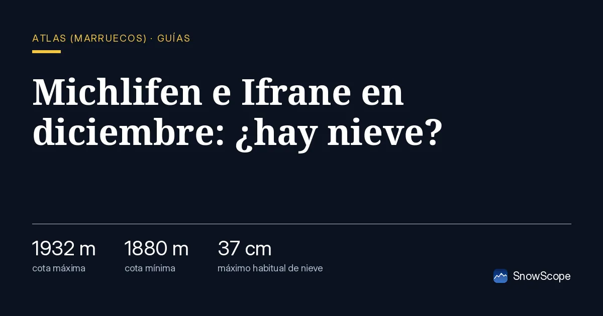

Michlifen e Ifrane en diciembre: ¿hay nieve?
En 46 inviernos de registros, Michlifen a mediados de diciembre normalmente no tiene nieve para esquiar. Solo en años raros la nieve se mantiene en el suelo lo suficiente para que importe. Esta es una estación para cazadores de tormentas, no para planificar una semana por adelantado.
Consulta la previsión de nieve en tiempo real de Michlifen ski resort en la app SnowScopeEspesor de nieve, alertas de nieve polvo y mapa 3D, gratis.
Por qué Michlifen lucha en diciembre
Michlifen se encuentra en el Atlas Medio de Marruecos a una altitud baja para una estación de esquí: la base está a 1870 m, a media montaña a 1970 m y en la cima a 2070 m. A solo 13 km de distancia, Ifrane a menudo se encuentra bajo una cubierta de nieve pintoresca, pero las pistas de Michlifen cuentan una historia diferente. Las montañas aquí reciben nieve a menudo pero la pierden rápidamente por fusión y viento.
La altitud importa menos en el Atlas que en las cadenas europeas. Lo que importa más es el tiempo: cuándo cae la nieve y qué tan rápido la sol la erosiona. En diciembre, el sol está bajo pero aún lo suficientemente fuerte como para eliminar la cobertura fina en días.

El panorama de diciembre a tres altitudes
A media montaña (1970 m), el 15 de diciembre muestra 0 cm en un invierno típico. Incluso en un diciembre generoso —uno de cada diez inviernos— obtienes solo 5 cm. Al 31 de diciembre, un invierno típico sigue en 0 cm, aunque un gran diciembre alcanza 17 cm. La parte sombría: el 83 % de los inviernos permanecen casi pelados (menos de 5 cm) en la Nochevieja.
El patrón es peor en la base y similar en la cima. La primera nieve duradera normalmente llega alrededor del 14 de diciembre, pero la palabra 'duradera' es generosa: un diciembre típico trae solo 24 días con nieve en el suelo. Muchos de esos días vienen en ráfagas cortas entre períodos de fusión.

Cuando llega nieve buena
El último invierno (2025-26) rompió el patrón. Para el 25 de diciembre de 2025, media montaña tenía 50 cm —suficiente para esquiar. La temporada alcanzó un pico de 51 cm en 48 días de nieve. Jbel Hebri cerca también cargó con 48 cm el 25 de diciembre, aunque un invierno típico allí cuenta solo 20 días de nieve.
Estos inviernos son la excepción. Cuando vienen, vienen de repente: un sistema de tormenta se detiene sobre el Atlas, descarga nieve pesada, y la base se construye rápidamente. Luego el tiempo se mueve. La diferencia entre un diciembre pelado y uno esquiable a menudo depende de la llegada de una única tormenta.
Michlifen versus terreno más alto
Oukaïmeden, situado mucho más alto en la misma cadena, es más seguro para una visita en diciembre. A media montaña (2929 m), un 15 de diciembre típico ofrece 16 cm, y el 43 % de los inviernos tienen al menos 25 cm para entonces. La media montaña de Michlifen en la misma fecha es 0 cm, con solo el 2 % de los inviernos llegando a 25 cm.
Incluso Oukaïmeden es una apuesta en diciembre. Pero las probabilidades se inclinan lo suficiente para que si debes esquiar a principios de temporada, la estación más alta es la opción más inteligente. Michlifen tiene sentido solo si puedes moverte rápido después de una nevazón fresca.
Lo que enseñan los últimos 46 inviernos
Los datos abarcan 1980-81 a 2025-26 y no muestran cambio a largo plazo. El peor diciembre en el registro trajo 9 cm de nieve máxima a media montaña. El mejor trajo 80 cm. La mediana se sitúa en 31 cm, pero ese número oculta la verdad: la mayoría de los años son finos, unos pocos años son profundos, y diciembre está dividido entre ellos.
Principios de diciembre (antes del 15 de diciembre) es más fino que finales de diciembre. Para el 25 de diciembre, los buenos años se vuelven más comunes. Para la Nochevieja, las probabilidades de tener 25 cm o más han aumentado al 7 %. Si tienes flexibilidad, esperar hasta finales de diciembre o principios de enero es mejor que reservar temprano.
Cómo usar esta estación en invierno
La verdadera fortaleza de Michlifen viene después de las primeras grandes tormentas de enero o febrero. Es entonces cuando la base se construye y se mantiene. Si quieres visitar en diciembre, trátalo como una bonificación: observa el clima, ve cómo se forma un sistema de tormenta, y ve dentro de dos o tres días de nieve pesada. Lleva neumáticos de invierno y comprueba las condiciones de la carretera antes de irte.
Para la experiencia postal de Ifrane, un día o dos después de una tormenta normalmente la entrega. La nieve es nueva, la ciudad está blanca, y el Atlas se muestra en su forma más hermosa. Pero contar con eso en diciembre es ilusión. Planifica para enero en adelante, o caza tormentas en el pronóstico.
Consejos para esquiadores
- Observa el pronóstico de tormentas, no el calendario. Una visita en diciembre funciona solo si nieva durante tu ventana de viaje. Vete dentro de 48 horas de nieve pesada para atrapar la mejor cobertura.
- Diciembre en Michlifen es esquí raro. Si la base muestra terreno pelado o cobertura fina en nuestro mapa, no reserves. Si ves nieve fresca, muévete rápido.
- Las carreteras en el Atlas Medio se hielan fácilmente después de la nevada, especialmente al amanecer. Lleva neumáticos de invierno y comprueba las condiciones antes de conducir hacia la montaña.
- Para un viaje seguro en diciembre, considera Oukaïmeden en su lugar. La nieve a mediados de diciembre allí es más probable, aunque aún no garantizada.
- Principios de enero y febrero son más fiables. Planifica tu viaje principal para entonces, y trata una nevada en diciembre como una oportunidad afortunada, no como una promesa.
Sobre estas cifras
Los espesores de nieve de las estaciones son la nieve más profunda en las pistas altas en la fecha indicada; son estimaciones para una zona, no una medida en un punto. Las previsiones pueden cambiar. Consulta siempre el boletín oficial de aludes antes de salir fuera de pista.
Citar este informe
Para investigación, docencia o prensa: cifras y gráficos reutilizables libremente bajo CC BY 4.0 con esta cita.
SnowScope (2026), Michlifen e Ifrane en diciembre: ¿hay nieve?, https://snowscope.app/blog/es/2026/11/michlifen-ifrane-neige-decembre-moyen-atlas.html, consultado el 2026-11-14
SnowScope (Atlas Labs). (2026, November 14). Michlifen e Ifrane en diciembre: ¿hay nieve?. SnowScope snow reports. https://snowscope.app/blog/es/2026/11/michlifen-ifrane-neige-decembre-moyen-atlas.html
BibTeX
@misc{snowscope2026michlifenifraneneigedece,
author = {{SnowScope (Atlas Labs)}},
title = {Michlifen e Ifrane en diciembre: ¿hay nieve?},
year = {2026},
month = nov,
howpublished = {\url{https://snowscope.app/blog/es/2026/11/michlifen-ifrane-neige-decembre-moyen-atlas.html}},
note = {Published 2026-11-14 13:29 UTC; accessed 2026-11-14}
}· CC BY 4.0 · Métodos, datos y herramientas →
Sigue Michlifen ski resort
Gratis: un aviso cuando llega la nieve y la previsión cada mañana.